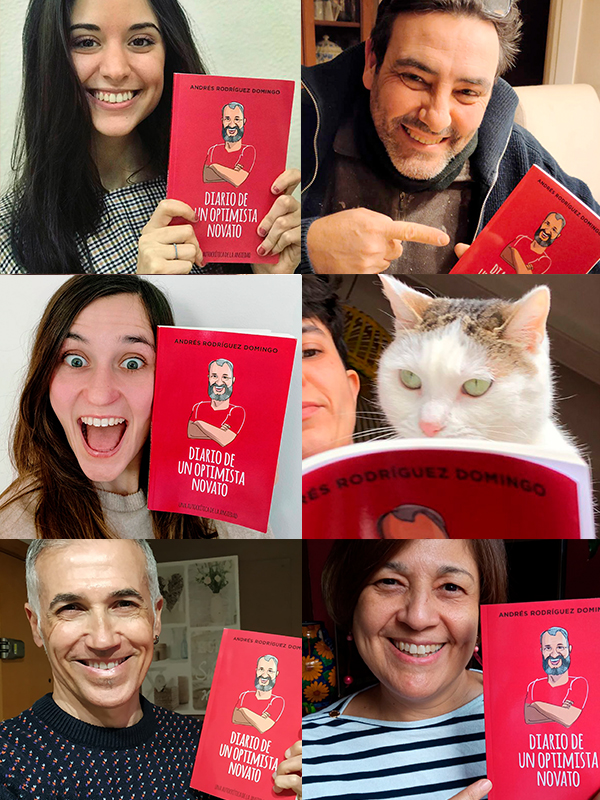
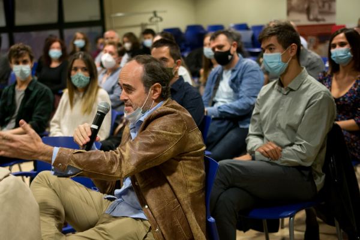
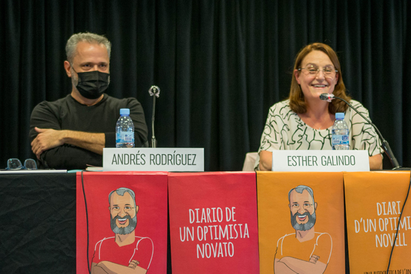
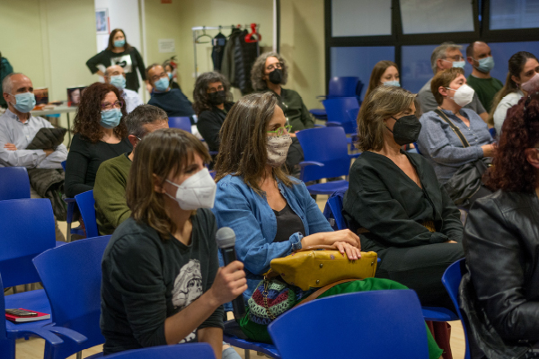
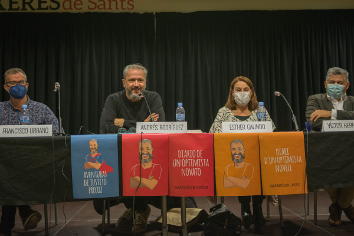
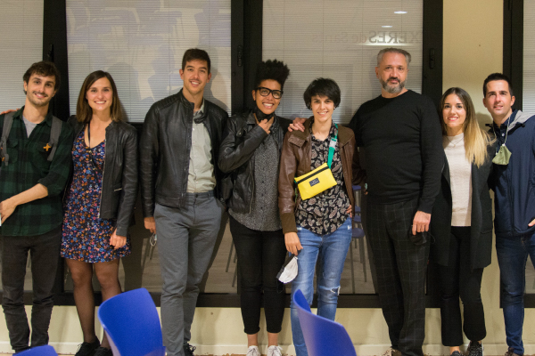
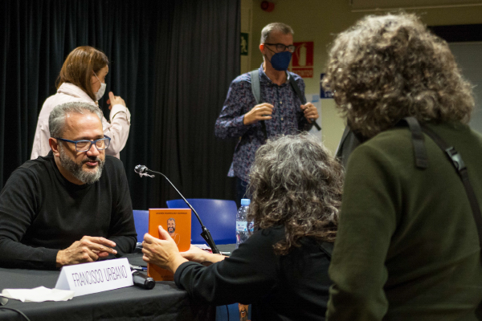
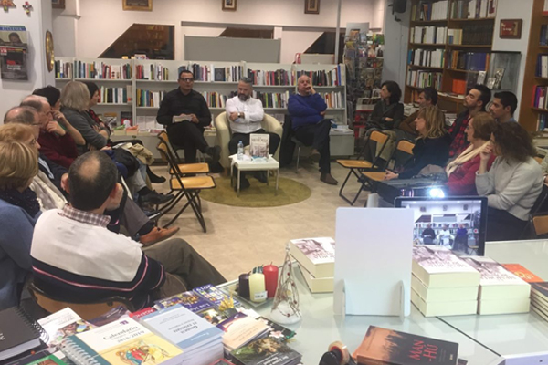
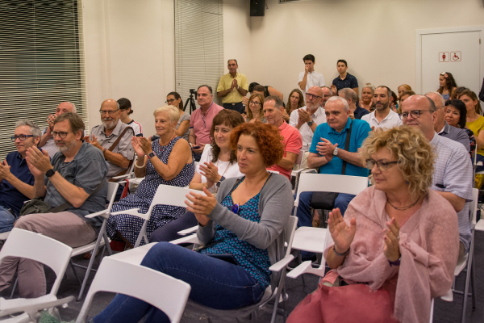

Un Día para hablar sin miedo
Una tarde distinta, tan estimulante como cercana, en el Centre Cívic Cotxeres de Sants. Durante la presentación de Diario de un optimista novato no solo hablamos de literatura, abrimos un espacio de reflexión sincera sobre el trastorno de ansiedad. El encuentro contó con la participación de Esther Galindo, psicóloga clínica; Víctor Hernández, doctor en Psicología; y Francisco Urbano, escritor. Entre experiencias, análisis y una conversación abierta con el público, la tarde se convirtió en algo más que una presentación: fue un diálogo necesario sobre salud mental, contado sin etiquetas y sin silencios.
Galería del evento






Videos del evento
Otras actividades

Literatura en voz alta
Porque escribir es sembrar preguntas. Pero conversar es hacerlas crecer.
Historia de una conciencia
La memoria robada y El susurro de las piedras condensan una vida en dos volúmenes.

El contacto con los lectores
Escribir es sembrar una historia. Pero sois vosotr@s quienes la hacéis crecer.